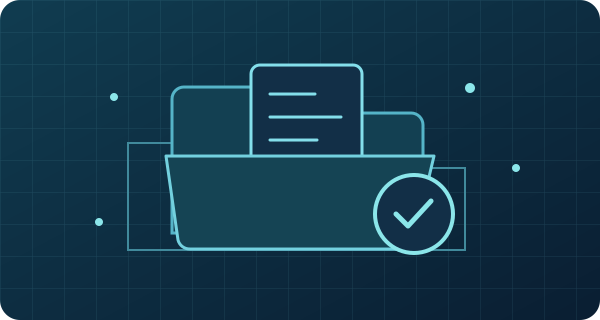

Proyecto final 2026 · HDI2000
Detección inteligente de amenazas digitales
Un proyecto del ITSE que conecta el análisis de datos con la ciberseguridad para entender cómo se detectan y se revisan las amenazas digitales.

Explora el proyecto

Ciberseguridad e IA
Conoce las amenazas, cómo se detectan y qué papel cumplen las alertas automatizadas.
Explorar el temaLaboratorio de detección
Analiza seis mensajes ficticios y aprende a reconocer sus señales de riesgo.
Probar los casos
Portafolio académico
Conoce al equipo del ITSE, sus habilidades digitales y sus evidencias aprobadas.
Ver el portafolioDos carreras, una pregunta: ¿qué nos dicen los datos?
Big Data y Ciencia de Datos organiza los registros, compara comportamientos y encuentra cambios que merece la pena investigar.
Ciberseguridad interpreta esas señales, valida el contexto y decide cómo proteger las cuentas, los sistemas y la información.
Ver un ejemplo de detección
De la señal a la decisión
- ObservaRevisa quién envía el mensaje y qué intenta que hagas.
- VerificaConfirma los datos en la aplicación o el sitio oficial.
- ActúaSi la solicitud es sospechosa, repórtala antes de interactuar.